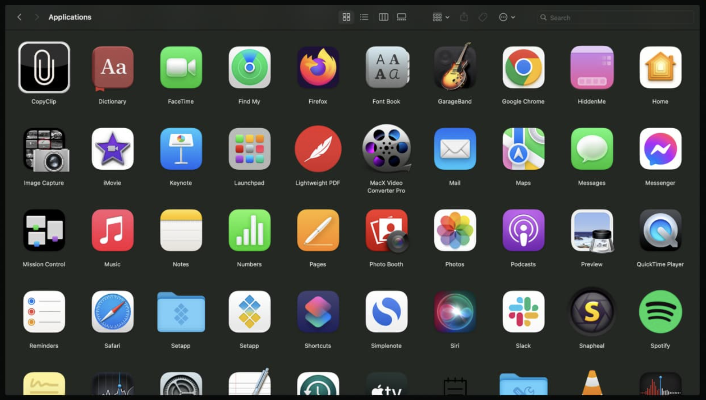
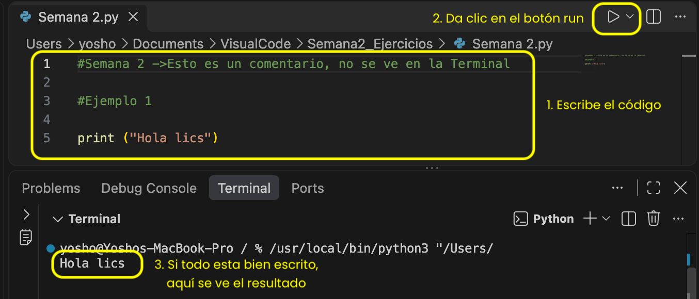
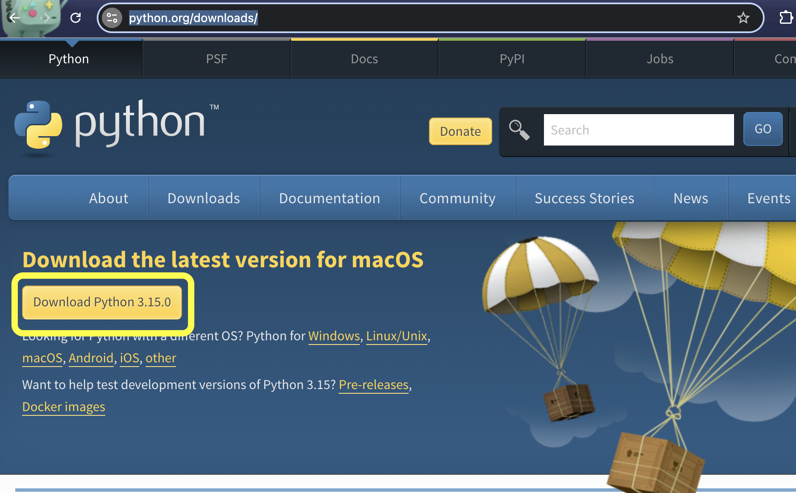
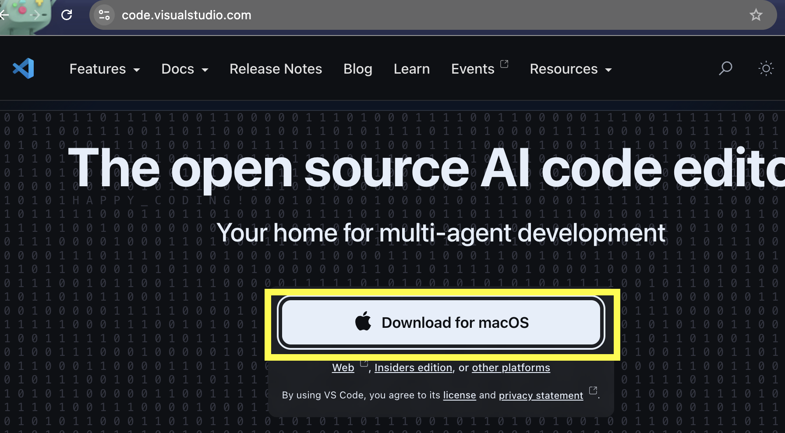
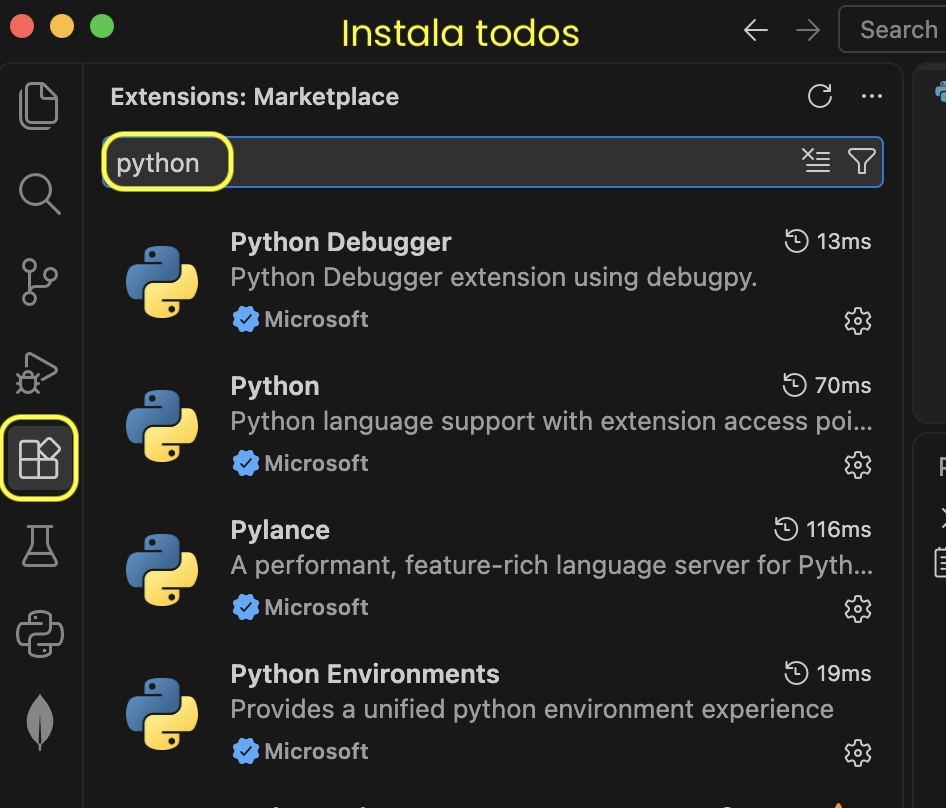
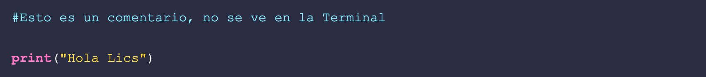

Hoy vamos a ver qué es un programa, cómo hablamos con una computadora, qué es Python y cómo instalarlo para empezar a programar.
Antes de escribir código, entendamos cómo "piensa" una computadora.
Una computadora, por sí sola, no sabe hacer nada. Es muy rápida, pero no piensa. Solo sigue instrucciones al pie de la letra.
Un programa es una lista de instrucciones que le dice a la computadora qué hacer, paso por paso. Piensen en una receta de cocina: si la receta dice "agrega 2 tazas de harina", el cocinero no se pregunta si mejor 3. Hace exactamente lo que dice.

Ejemplo de su día a día: cuando pagan en la caja de una tienda, el sistema hace esto:
Y esto ya lo vieron con algoritmos: un programa es un algoritmo escrito en un idioma que la computadora entiende.
El que usamos para hablar: español, inglés, francés. Es flexible. Si le dicen a un amigo "nos vemos al rato", él entiende aunque "al rato" pueda ser 10 minutos o 3 horas.
Un idioma inventado para hablar con la computadora. No tiene nada de flexible. Si escriben una coma de más o una palabra mal, la computadora no "adivina": simplemente marca error.
| Lenguaje natural | Lenguaje de programación |
|---|---|
| Lo usan personas | Lo usan personas para hablar con computadoras |
| Acepta ambigüedad ("al rato") | Necesita exactitud total |
| Si te equivocas, te entienden igual | Si te equivocas, no funciona |
| Ejemplo: español | Ejemplo: Python |
Todo lenguaje, sea español o Python, tiene partes. Antes de ver la respuesta, piensen: ¿qué creen que significa cada palabra?
¿Qué es un alfabeto? ¿Python tendrá uno?
Son los símbolos que se pueden usar. En español son las letras de la A a la Z. En Python son letras, números y símbolos como + = (
¿Han escuchado la palabra "léxico"? ¿Con qué la relacionan?
Son las palabras válidas del idioma. "Casa" existe en español, "csaa" no. En Python, print existe, prnt no.
¿"Croquetas perro el come" está bien dicho?
Son las reglas para acomodar las palabras. Las palabras existen, pero en desorden no funcionan. Lo correcto es "El perro come croquetas".
¿Una frase puede estar bien escrita y aun así no tener sentido?
Es que lo que digas tenga sentido. "La croqueta se comió al perro" está bien escrita, pero no tiene lógica. Un programa puede estar bien escrito y aun así hacer algo absurdo, como cobrar un descuento del 200%.
Por dentro, la computadora solo entiende ceros y unos (código binario). A eso se le llama lenguaje máquina. Algo así:
10110000 01100001
Nadie quiere escribir así. Es como tratar de hacer un pedido en una app escribiendo solo con señales de humo.
Por eso se inventaron los lenguajes de alto nivel, que se parecen más al inglés y son fáciles de leer para las personas. Así se saluda en Python:
print("Hola Lics")

Una sola línea y la computadora los saluda. Le dicen "alto nivel" porque están más cerca de las personas y más lejos de la máquina. El problema es que la computadora no los entiende directamente. Alguien tiene que traducirlos a ceros y unos. Y hay dos formas de hacer esa traducción.
Imaginen que tienen un libro en inglés y quieren leerlo en español. Hay dos opciones:
Le dan el libro completo a un traductor, él lo traduce de principio a fin y les entrega un libro nuevo en español. Ya no necesitan al traductor para leerlo. Así funcionan C y C++.
Contratan a un intérprete que se sienta junto a ustedes y les va traduciendo línea por línea mientras leen. Cada vez que quieran leer el libro, lo necesitan a su lado. Python funciona así.
El intérprete es el programa que lee su código de Python y lo va ejecutando instrucción por instrucción. Hace tres cosas:
Si encuentra un error, se detiene en esa línea y les avisa dónde está el problema. Es como un maestro que revisa su examen pregunta por pregunta y se detiene en la primera que está mal.
Cuando instalen Python desde python.org, justamente están instalando este intérprete en su computadora.
| Compilación | Interpretación | |
|---|---|---|
| Velocidad al ejecutar | Más rápida (ya está traducido) | Más lenta (traduce mientras corre) |
| Probar cambios | Lento: hay que volver a compilar todo | Rápido: cambias y corres de inmediato |
| Encontrar errores | Te da todos al compilar | Te dice el error en la línea donde ocurre |
| Compartir el programa | Entregas el archivo ya traducido | La otra persona necesita tener el intérprete |
| Ideal para | Videojuegos, sistemas operativos | Aprender, análisis de datos, automatizar tareas |
Para aprender, la interpretación es mucho más amigable: escriben una línea, la prueban, ven qué pasa.
Conozcamos la herramienta que vamos a usar todo el semestre.
Aunque el logo tiene dos serpientes, el nombre no viene de la serpiente. Viene de Monty Python, un grupo de comedia británico de los años 70. Al creador le gustaba su programa de televisión y quería un nombre corto, divertido y un poco misterioso.
Así que cuando digan "Python", piensen en una herramienta, como Excel o WhatsApp, no en un animal.
Lo creó Guido van Rossum, un programador holandés. Durante muchos años la comunidad lo llamó en broma el "Dictador Benevolente de por Vida" de Python, porque él tenía la última palabra sobre cómo debía evolucionar el lenguaje.
Python nació casi por aburrimiento. En diciembre de 1989, durante las vacaciones de Navidad, Guido quería un proyecto para entretenerse. Decidió crear un lenguaje que fuera:
La primera versión salió en 1991. Lo que empezó como un pasatiempo navideño hoy es uno de los lenguajes más usados del mundo. Moraleja: los proyectos personales pueden llegar muy lejos.
Se lee casi como inglés. Comparen cómo se saluda al grupo en dos lenguajes:
public class Main { public static void main(String[] args) { System.out.println("Hola Lics"); } }
print("Hola Lics")
Cinco líneas contra una. Por eso Python es ideal para empezar.
Para ustedes que estudian Comercio, esto es clave: Python se usa muchísimo para analizar datos de ventas, clientes e inventarios.
También son interpretados y de alto nivel:
Python no es "el mejor" en todo, pero sí es uno de los más fáciles para empezar.
Probablemente ya lo usaron hoy sin saberlo:
Python no es perfecto. Hay cosas para las que no es la mejor opción:
Es como un auto: un sedán es excelente para la ciudad, pero no lo usarían para una carrera de Fórmula 1 ni para mudarse de casa.
La versión antigua. Dejó de recibir soporte en enero de 2020. Ya no se debe usar.
La versión actual. Es la que vamos a instalar.
Son como dos versiones de una app: si alguien les pasa código viejo de Python 2, puede que no funcione en Python 3, igual que una app vieja que ya no abre en tu celular nuevo.
Regla para ustedes: siempre Python 3.
Python es el idioma, pero hay distintos programas que lo interpretan. A cada uno se le llama implementación:
| Implementación | ¿Qué es? |
|---|---|
| CPython | La versión oficial, escrita en el lenguaje C. Es la que se descarga de python.org. |
| PyPy | Una versión más rápida. |
| Jython | Python que funciona dentro del mundo de Java. |
| MicroPython | Una versión pequeñita para aparatos electrónicos, como sensores o robots. |
Piensen en el español: es el mismo idioma, pero hay diferentes "versiones" según el país. Todos se entienden, pero cada uno tiene sus particularidades.
Recuerden: Python es el idioma y Visual Studio Code es el cuaderno donde lo escribimos.
Sigan los pasos en orden. Las imágenes son de Mac.

Antes de instalar, marquen la casilla "Add python.exe to PATH".
Visual Studio Code (VS Code) es un IDE (Integrated Development Environment, entorno de desarrollo integrado): el programa donde escribimos código de forma cómoda, con colores, ayudas y un botón para ejecutarlo.

Marquen las casillas "Agregar a PATH" y "Agregar la acción Abrir con Code".
Cmd + Shift + X en Mac (Ctrl + Shift + X en Windows).
Python_Semana2_MiMatricula.hola.py.
Cmd + S (Mac) o Ctrl + S (Windows).Con una sola línea de Python ya le dieron una instrucción a la computadora.
De aquí en adelante, todo es practicar.